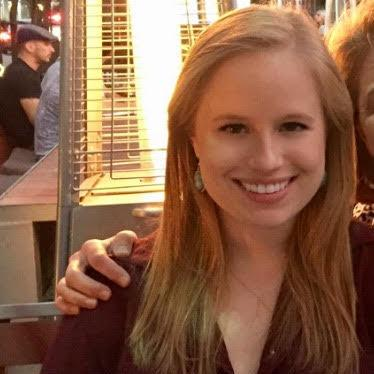

Paul Rose is originally from the flat state of Kansas. He attended the University of Kansas and studied Petroleum Engineering. Some of his interests include: basketball, comic books, coins, motorcycles, and traveling.

Laura Wilson is a Fort Worth native currently living in Dallas. She studied Nutritional Sciences at Oklahoma State University. She loves running, boxing, tacos and golden retrievers.

Kyle Tobin is from Kingsville, TX and now resides in Dallas for the past four years. He currently spends most of his at the gun range or with his dog when he is working on learning Javascript